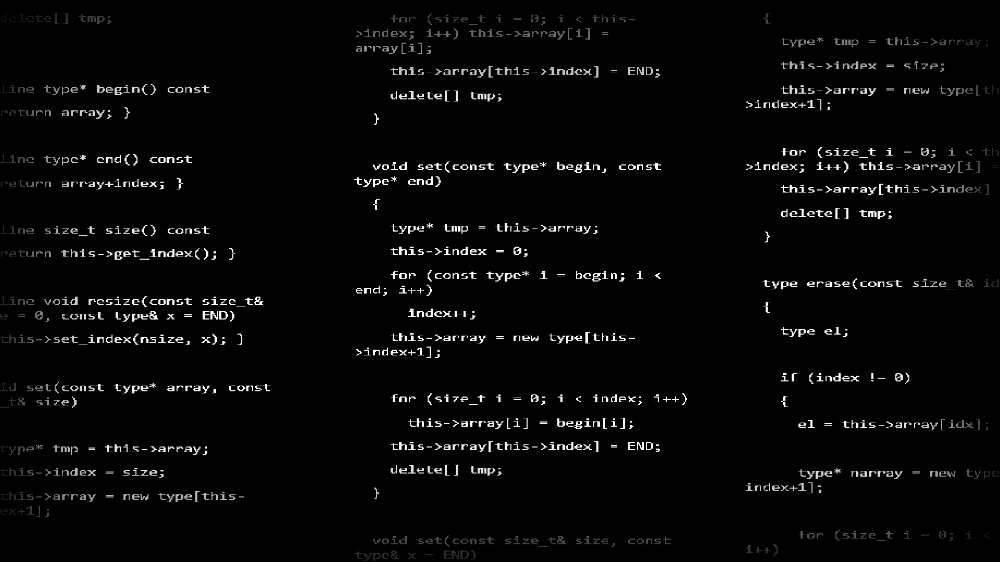

± Projects
Akai Keisanki Library eXperiments
–•– About it –•–
As said in its GitHub README.md file, AKeLiX is an experimental library-making test with no current pourpose or application.
It works as an experimental library collection with mathematical and computer functions and classes, made for exploring and studying OOP and other programming concepts, being a great way of practicing anything related to programming languages studying.
For every new language Akai Keisanki studied, he did a different version AKeLiX. Most were smaller or very reduced versions of the public ones.

–•– Access –•–
GitHub
For AKeLiXC++ & AKeLiX_py.